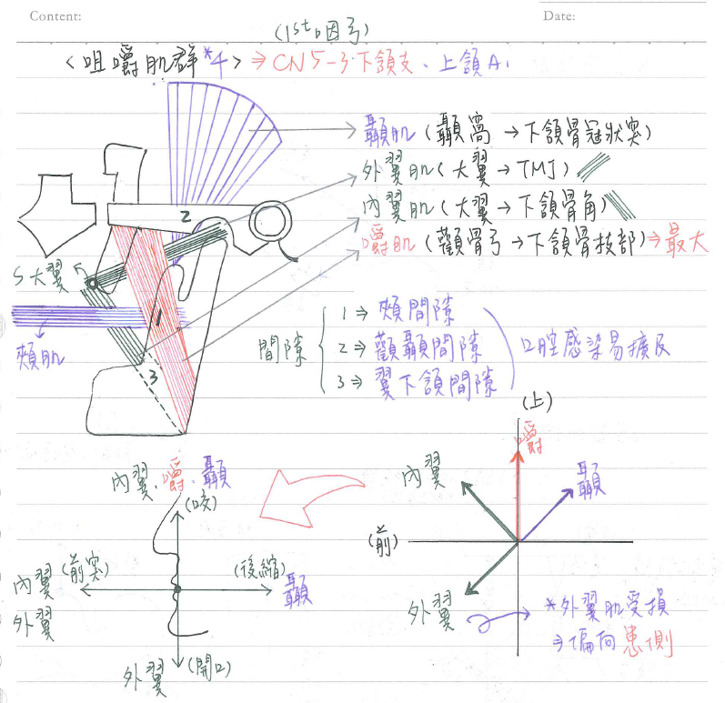
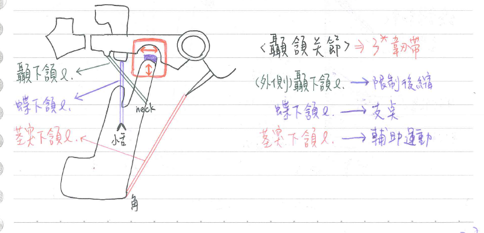

💪🏼 肌肉系統：咀嚼肌群[背肌肉收縮方向圖即可]
咀嚼肌：4條
| 肌肉 | 神經支配 | 解剖作用 | 起點 | 終點 | 備註 |
|---|---|---|---|---|---|
| 嚼肌/咬肌(masseter m.) | 三叉N | 下頷骨★向上(閉口) | 顴骨弓(=顴骨顳突+顳骨顴突) 上頷骨 | 下頷骨支部外表面 | 咀嚼肌群最大者 |
| 顳肌(temporalis m.) | 三叉N | 下頷骨★向上、向後 | 顳窩(temporal fossa) | 下頷骨冠狀突 | |
| 內翼肌 (medial pterygoid m.) | 三叉N | ★★★下頷骨向上、向前、向對側(向內) | 蝶骨大翼 | 下頷骨角內表面 | |
| 外翼肌 (lateral pterygoid m.) | 三叉N | ★★★下頷骨向下、向前、向對側(向內) ★張口 | 蝶骨大翼 | ★★顳頷關節(TMJ)的關節盤&關節囊 | 外翼肌受損⇒ 開口時下頷會偏向患側 |
特點：
- 咀嚼肌群源自第一咽弓，由三叉神經之下頷枝(CN 5-3)支配、上頷A供應血液
- 咀嚼肌群起於顱骨/顏面骨，終止於下頷骨⇒負責下頷骨的運動
- 頰間隙(buccal space)：頰肌(深部)&嚼肌(淺部)
- 顴顳間隙(zygomaticotemporal space)：顳肌(深部)&顴骨弓(淺部)
- 翼下頷間隙(pterygomandibular space)：翼肌(深部)&下頷骨枝部(淺部)
顳頷關節(temporal mandibular joint, TMJ)：頭部唯一可動關節
- 構成：★顳骨(下頷窩)-下頷骨(髁狀突)
- 關節腔：以關節盤(articular disc)隔出上下腔
- 關節盤：★纖維性軟骨；前緣與外翼肌相連
- 上腔：for上頷骨前突、後縮
- 下腔：for下頷骨上關、下開
- 囊外韌帶(extracapsular l.) x3
- ★外側顳下頷韌帶(lateral temporomandibular l.)：顳骨(關節結節)-下頷骨頸；限制下頷骨後縮⇒防止撞擊外耳道
- ★蝶下頷韌帶(sphenomandibular l.)：蝶骨(棘突)-下頷骨(小舌)；支撐下頷骨防止其搖晃
- ★莖乳突下頷韌帶(stylomandibular l.)：顳骨(莖乳突)-下頷骨角；輔助下頷骨運動


📖 書本補充：與筆記不同或筆記沒寫到的地方
⚠️
以下為對照書本後整理，筆記原文未更動。標「筆記 vs 書」的是兩邊寫法不同、建議回頭確認的地方。
咀嚼肌的附著點與作用（p.524）
- 顳肌：起點除了顳窩，還有顳筋膜深層；作用：上提下顎、把下顎往後拉（後纖維）。
- 嚼肌：起於顴骨及顴弓，止於下頷角及下頷枝外側面；作用除了上提下顎，書還列了下顎前突。
- 筆記 vs 書：內翼肌起點，筆記寫「蝶骨大翼」；書上是兩個頭：外翼板的內側面，及上頷骨的粗隆，止於下頷枝內側面（剛好在嚼肌的對面）。作用：協同嚼肌上提下顎、下顎前突。
- 筆記 vs 書：外翼肌起點，筆記只寫「蝶骨大翼」；書上也是兩個頭：蝶骨大翼（上頭）及外翼板的外側面（下頭）。止點：上頭→顳下頷關節（關節盤）；下頭→下頷頸（筆記只寫了關節盤與關節囊）。
- 外翼肌作用（書）：兩側一起收縮＝前突及張口；單側收縮＝下顎往對側動。
- 書的提示：
- 嚼肌其實不在顳下窩內，只是放在這節一起講。
- 外翼肌附在 TMJ 的關節盤上，是讓下顎前突的主要肌肉。
- 上頷動脈的第二段走在外翼肌的淺層或深層。
- 顳肌、嚼肌、翼內肌都能上提下頷骨（閉嘴）。
下頷神經 V3 與咀嚼肌（p.527–528）
- V3 前幹細、大多是運動支：到腭帆張肌、到鼓膜張肌、到咀嚼肌，以及頰神經（感覺）。
- V3 後幹粗、大多是感覺支（耳顳、下齒槽、舌神經），例外是下齒槽神經分出的到下頷舌骨肌的神經（運動）。
- 書的提示：名字有「Tensor」的兩條肌肉都由 V3 支配；V3 的頰神經是感覺神經，不要和顏面神經的頰支（管表情肌）搞混。
- 咀嚼肌源自第一咽弓（p.95，與筆記一致；104-2-32 考嚼肌屬第幾咽弓）。
- 上頷動脈第二段（翼外肌淺或深層）發出到咀嚼肌的肌肉支（顳、翼外、翼內、嚼肌）及頰動脈（p.526），與筆記「上頷A供應」一致。
顳顎關節（p.529）
- 類型：滑液關節中的特殊屈戌關節（hinge）；位於下頷骨髁突的頭與顳骨下頷窩及關節結節之間。
- 髁突頭的關節面覆蓋的是纖維軟骨，不是透明軟骨；關節盤也是纖維軟骨（與筆記一致）。
- 盂後結節（postglenoid tubercle）防止往後脫臼；關節囊上有游離神經末梢。
- 囊外韌帶：
- 外側（顳下頷）韌帶：關節結節→往後下到下頷骨頸部；防止關節往後方脫臼（113-1-12）。
- 蝶下頷韌帶：蝶骨的棘→下頷孔上方的小舌；書說它是下頷骨運動的支點。
- 筆記 vs 書：莖突下頷韌帶，筆記寫「顳骨(莖乳突)-下頷骨角」；書上寫的是由莖突（styloid process）到下頷角。「莖乳突」容易和乳突／莖乳孔混淆，建議改成莖突。
- TMJ 的動脈：顳淺、上頷（含深耳、顳深及翼外的分支）、咽升，全部來自外頸動脈。神經：耳顳、顳深及嚼肌神經（皆 V3）。
📝 書中歷屆考題（點選答案作答）
103-1-11p.525
下列何者是負責張口的主要肌肉？
106-1-18p.525、p.530
有關顳頷關節 (temporomandibular joint) 之敘述，下列何者正確？
💡 (A)(B) 剛好相反：莖突下頷韌帶→下頷角，蝶下頷韌帶→小舌；關節盤是纖維軟骨。（書中 p.525 與 p.530 重複收錄此題）
110-2-31p.530
下列何者的兩種人體關節，都具有關節盤 (articular disc) 的構造？
💡 胸鎖關節另一特點：是上肢和中軸骨之間唯一的關節。
113-1-12p.530
下列何者是防止顳頷關節 (temporomandibular joint) 向後方脫臼最重要的構造？
💡 顳頷（外側）韌帶由關節結節往後下連到下頷頸，可防止往後脫臼。
99-2-9p.528
臨床上牙科處理下排臼齒時，局部麻醉下齒槽神經 (inferior alveolar nerve) 多由何處注射局部麻醉藥劑？
104-2-32p.97
嚼肌 (masseter muscle) 是衍生自那一咽弓 (pharyngeal arch)？